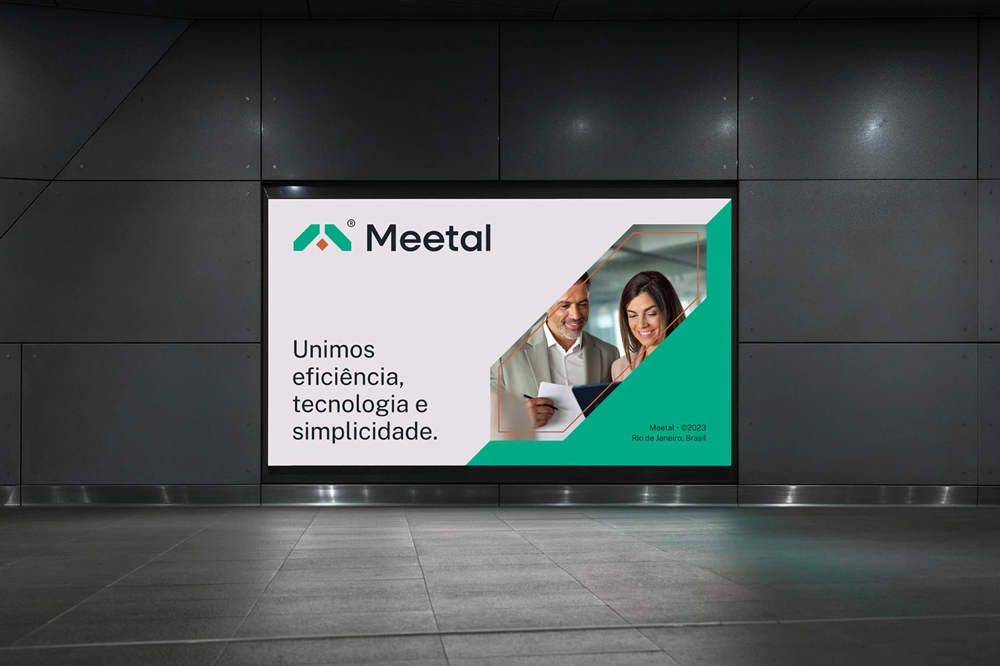
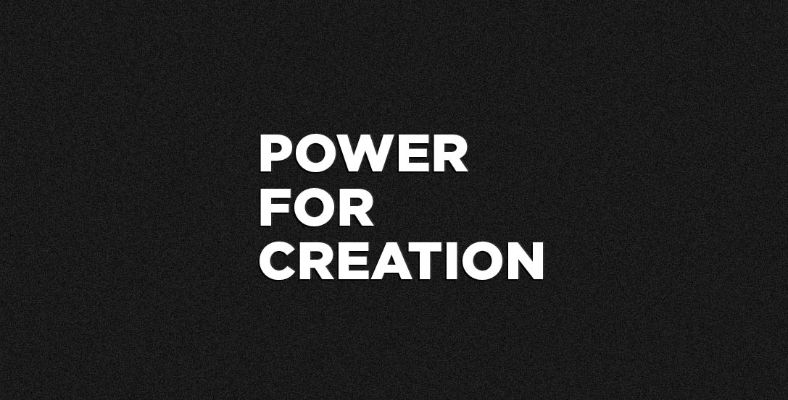
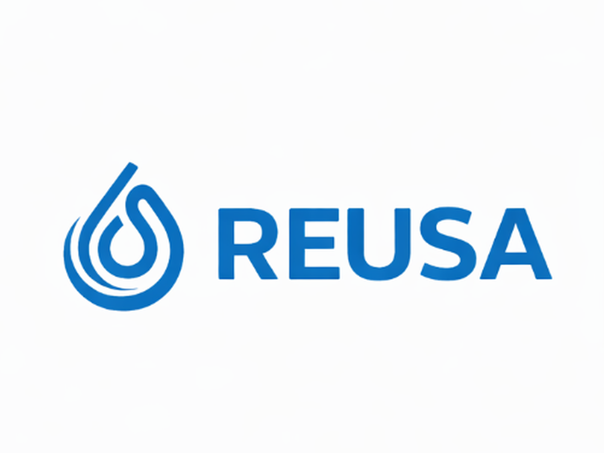
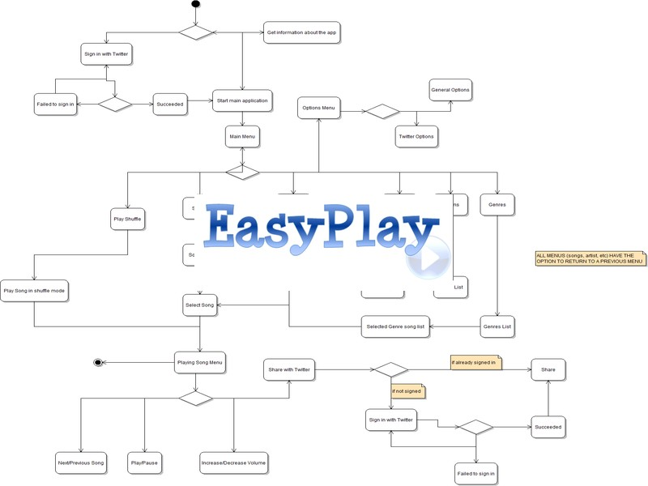
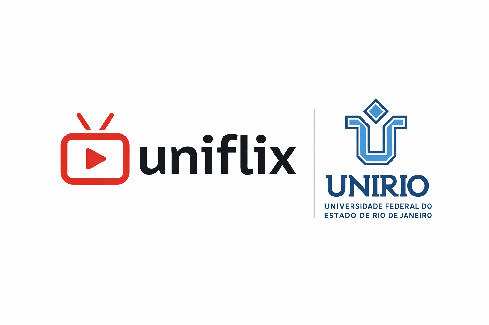

Meetal
Meetal é uma plataforma ERP em rápida evolução voltada à gestão operacional, financeira e de estoques no setor de reciclagem e logística industrial.
A plataforma opera em ambientes de produção com clientes ativos e iteração contínua de produto, combinando serviços de back-end, fluxos operacionais, recursos com IA e integrações externas.
Contribuições principais
- Desenvolvimento de serviços de back-end e APIs para fluxos operacionais e financeiros
- Integrações com plataformas externas, hardware industrial e serviços com IA
- Participação em decisões arquiteturais envolvendo escalabilidade e manutenibilidade a longo prazo
- Depuração, refatoração e otimização de desempenho em fluxos críticos em produção
Stack & Arquitetura
Desafios Técnicos
Performance
Otimização de fluxos críticos em produção e gargalos de desempenho em sistemas operacionais em rápido crescimento.
Integrações com Serviços Externos
Desenvolvimento de integrações envolvendo APIs externas, serviços com IA e hardware industrial por comunicação serial.

Vandal
Marketplace de print-on-demand e plataforma de produção em rápido crescimento voltados a vestuário personalizado e designs criados por usuários.
À época, a plataforma suportava mais de 70 mil designs de produtos criados por mais de 10 mil artistas, combinando e-commerce, fluxos operacionais, logística de produção e sistemas de back-end em ambiente de startup com alta autonomia.
Contribuições principais
- Desenvolvimento de sistemas de back-end que sustentavam operações do marketplace, fluxos de produção e logística
- Concepção e implementação de um módulo customizado de back-office e gestão da produção
- Integrações com gateways de pagamento, transportadoras, fluxos em AWS S3 e dispositivos de hardware por comunicação serial
- Participação em decisões de infraestrutura, arquitetura de back-end, depuração e manutenção de longo prazo de sistemas em produção
- Tradução de requisitos de negócio e operação em soluções técnicas escaláveis
Stack & Arquitetura
Desafios Técnicos
Escalabilidade operacional
Otimização do processamento de alto volume de pedidos e fluxos de produção em picos de tráfego e períodos promocionais.
Integrações externas
Desenvolvimento de integrações envolvendo gateways de pagamento, transportadoras, fluxos em AWS S3 e dispositivos de hardware por comunicação serial.

ReUsa
ReUsa é uma plataforma de gestão, mapeamento e comercialização de recursos hídricos de reuso no estado do Rio de Janeiro.
O projeto foi desenvolvido no âmbito de uma iniciativa de pesquisa e inovação envolvendo órgãos públicos, concessionárias de água e esgoto e equipes interdisciplinares, com o objetivo de apoiar operações industriais de água de reuso por meio de dados geoespaciais e operacionais.
Contribuições principais
- Liderança técnica e definição de arquitetura para um MVP funcional apresentado a órgãos públicos e stakeholders da indústria
- Desenvolvimento de back-end, modelagem de sistemas e implementação de integrações geoespaciais com Google Maps APIs
- Definição de uma arquitetura flexível e adaptável, voltada a iteração rápida e requisitos em evolução
- Documentação técnica, coordenação de entregas e comunicação orientada a stakeholders ao longo do projeto
Stack & Arquitetura
Desafios Técnicos
Integrações geoespaciais
Implementação de recursos de geolocalização e mapas com Google Maps APIs para visualização de recursos industriais e fluxos operacionais.
Modelagem complexa
Tradução de cálculos de domínio, regras operacionais e requisitos interdisciplinares em lógica de aplicação sustentável.

EasyPlay
Player integrado ao Twitter
(projeto acadêmico)
Resumo
EasyPlay, um software de reprodução de música integrado ao Twitter, é um projeto acadêmico desenvolvido durante minha formação técnica, em 2010. Focado em modelagem orientada a objetos e documentação arquitetural, o sistema foi projetado para exercitar conceitos de design de software, diagramas UML e versionamento.
Minhas responsabilidades
- Modelagem e arquitetura do sistema
- Gerenciamento de tarefas
- Desenvolvimento back-end e integrações
Stack & Arquitetura
Desafios Técnicos
Modelagem do banco de dados
Estruturação de entidades e relações.
Documentação Arquitetural
Representação clara do sistema através de diagramas, facilitando entendimento e comunicação técnica.

uniflix
Sistema de recomendação de filmes
(projeto acadêmico)
Resumo
Uniflix é um estudo focado no desenvolvimento de um sistema de recomendação, explorando diferentes abordagens para sugerir conteúdos com base nos dados cadastrados. O objetivo principal foi analisar estratégias distintas de recomendação e compreender seus impactos em precisão, escalabilidade e complexidade de implementação.
Minhas responsabilidades
- Implementação das lógicas de recomendação
- Análise e comparação de diferentes abordagens
- Organização da aplicação e regras de negócio
Stack & Arquitetura
Desafios Técnicos
Lógica de Recomendação
Implementação e comparação de múltiplas estratégias de recomendação, avaliando vantagens e limitações de cada abordagem.
Análise de Dados
Estruturação e tratamento eficiente dos dados para gerar recomendações relevantes de forma consistente.